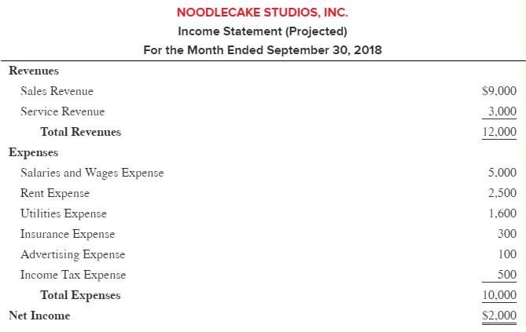
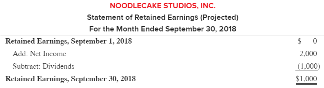
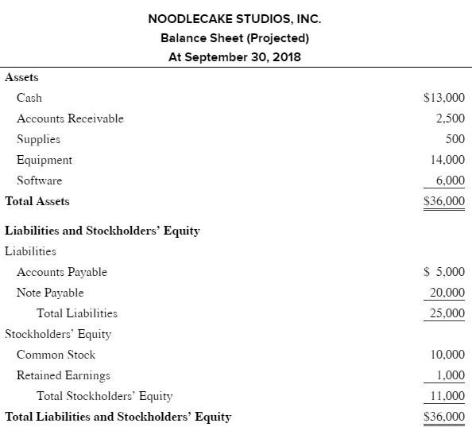
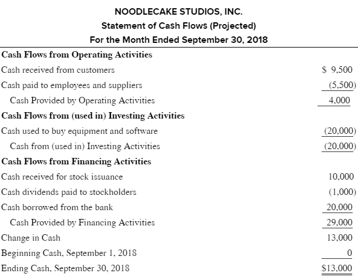

Chapter One Notes
#Acc201/Chapter/1
Vocabulary
Sole Proprietorship: Business organization owned by one person. The owner is personally liable for all debts of the business.
Partnership: Business organization owned by two or more people. Each partner is personally liable for all debts of the business.
Corporation: A separate legal entity. Owners of corporations (stockholders) are not personally liable debts of the corporation.
Financing Activity: Getting the company money (loan from bank, sell stock, pay dividends).
Operating Activity: Anything that the company does on the day to day (buy inventory, salaries, expenses and revenue).
Investing Activity: Long term items (buying or selling equipment, land, buildings, investing in other companies).
Internal User: A manger or supervisor.
External User: Creditors and Investors, both current and future.
Assets: Economic resources presently controlled by the company, that have both ameasurable valueand are expected tobenefitthe company by producing cash inflows or reducing outflows.
Liabilities: Measurable amounts that the company owes to creditors.
Stockholder’s Equity: Owner’s claim to the business resources.
Revenues: Sales of goods or services. Measured at the amount the business charges customer.
Expenses: The necessary costs of doing business (wages, advertising, insurance, supplies)
Dividends: Distribution of a company’s earnings to its stockholders as a return (Not an Expense).
Concepts
The Accounting System

The accounting system’s purpose is to analyze, record, and summarize business activities. It captures the information about the business and financing activities of a company for both internal users(Financial accounting reports)and external users(Managerial accounting reports).
The Basic Accounting Equation
Assets = Liabilities + Stockholder’s Equity
The Net Income Equation
Revenues - Expenses = Net Income.
The Separate Entity Assumption
The financial reports of a business are assumed to include the results of only that business’s activities.
The Unit of Measure Assumption
The results of business activities should be reported in an appropriate monetary unit.
The Financial Statements
Who, What, When
Who is the report from
What is the statement
When the statement covers (point in time or a time period)
Uses
Creditors
- Is a company generating enough cash (Cash flow)
- Does company have enough assets to cover liabilities (Balance sheet)
Investors
- What is immediate return on investment (Retained Earnings)
- What is the long term return (Income Statement)
Overall
Provide useful financial information to external users for decision making. It is useful if it is relevant and a faithful representation. Other enhancers are being timely, verifiable, comparable, and understandable. These things all lead to standards.
Standards
The USA has the FASB (Financial Accounting Standards Board) that use GAAP (Generally Accepted Accounting Principals).
The World has IASB (International Accounting Standards Board) that use IFRS (International Financial Reporting Standards).
The Income Statement

Uses the Net Income Equation, with Revenues first (biggest to smallest) then Expenses (biggest to smallest, income tax is always last), and finally at the bottom is net income.
The Statement of Retained Earnings

The previous time periods retained earnings are added to the net income (from the income statement), and dividends are subtracted, giving you the new retained earnings amount
The Balance Sheet

The retained earnings are brought over to the balance sheet, which is apoint in timeof the company. Using the basic accounting equation, Assets are put at the top (sorted by liquidity), followed by Liabilities (short to long term), then Stockholders Equity. The total of SE + L should equal your assets.
The Statement of Cash Flows

The cash from the balance sheet is brought over as an operating activity. The balance sheet shows the companies activities (all 3) over a specific time period and how that effect the cash of the company.